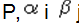
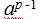

ECC kriptografija (Eliptične krivulje)
Izradile: Nina Kuzmić, Lea Kuzminski, Renata Mesaroš
Sadržaj
|
Uvod
U svijetu današnjice kriptografija posebno dolazi do izražaja i poprima veliku važnost u zaštiti podataka. Jedna od najčešće korištenih jest RSA, no kao konkurent mu se javlja ECC kriptograija sa svojom manjom veličinom ključa kojom omogućuje brže procesiranje. No, RSA ipak još ima veću pouzdanost pa je više u upotrebi. Ovim radom cilj je predstaviti ECC kriptiranje, njegov način rada te dati nekoliko primjera na kojima se vidi njegov način funkcioniranja.
Eliptične krivulje
Općenito o eliptičnim krivuljama
Naziv „eliptične“ dolazi iz razloga što su opisane kubnim jednadžbama, iako nemaju izgled elipse.Kriptografija koju koriste eliptične krivulje koristi abelovu grupu temeljenu na zbrajanju. Prema tome, određeni broj se dodaje n puta pa je prilikom dekriptiranja potrebno odrediti broj n. Eliptična krivulja je definirana preko dvije varijable s koeficijentima gdje su varijable ograničene.
Eliptične krivulje su opisane pomoću kubnih jednadžbi oblika:
y^2+axy+by = x^3+cx^2+dx+e
a,b,c,d – realni brojevi
x,y - varijable koje poprimaju vrijednosti realnih varijabli
Točka beskonačnosti se označava sa O.
Svaka eliptična krivulja je simetrična s obzirom na os y gdje je y=0 jer je y varijabla koja sadrži pozitivne i negativne vrijednosti za svaku x vrijednost.
Eliptične krivulje se dijele na dva tipa:
1) osnovne krivulje (tj. krivulje prvog reda) nad Zp
2) Binarne krivulje nad GF(2^m)
Krivulje prvog reda se prikazuju pomoću kubnih jednadžbi gdje varijable i koeficijenti predstavljaju cijele brojeve iz skupa 0 do p-1. Upravo je ovaj tip krivulja najbolji za programske aplikacije, dok su binarne krivulje bolje za hardverske aplikacije. Potrebno je napomenuti da se kod krivulja prvog reda izračun svodi na mod od p.
Grupovni zakon
Kada se govori o kriptosustavima koji su zasnovani na problemu diskretnog logaritma, naglašava se da je grupa točaka na eliptičnoj krivulji nad konačnim poljem jedna od važnijih grupa koje se koriste u kriptografiji. Isto tako, imaju veliku ulogu kod faktorizacije i dokazivanja prostosti.
Neka je K polje. Eliptična krivulja nad poljem K je nesingularna projektivna kubna krivulja s barem jednom točkom. Ona ima jednadžbu oblika
{kind=link}
U kojoj su a, b, c, d, e, f, g, h, i, j ϵ K, a nesingularnost znači da je u svakoj točki na krivulji postoji barem jedna parcijalna derivacija koja je različita od nule. Svaka takva jednadžba se može svesti na sljedeći oblik:
{kind=link}
Ovaka oblik formule nazivamo Weierstrassova forma. Ukoliko je karakteristika polja K različita od 2 i 3, tada jednadžba poprima sljedeći oblik:
{kind=link}
Točka u beskonačnosti se pojavljuje ukoliko eliptičnu krivulju prikažemo u projektivnoj ravnini. Nju dobijemo tako da skupu K^3 \{(0,0,0)} uvedemo relaciju ekvivalencije (X,Y,Z) ~(kX,kY,kZ) pa dobivamo sljdeću jednadžbu:
{kind=link}
Operacija zbrajanje na skupu E(R) se objašnjava na pretpostavku da su tri točke na krivulji E kolinearne ako i samo ako im je suma jednaka neutralnom elementu. Ovo se može zapisati i eksplicitnim formulama za koordinate zbroja točaka. Te formule mogu poslužiti za definiciju zbrajanja točaka na eliptičnoj krivulji nad proizvoljnim poljem. Formule su sljedeće:
{kind=link}
{kind=link}
{kind=link}
{kind=link}
{kind=link}
{kind=link}
{kind=link}
{kind=link}
{kind=link}
λ je koeficijent smjera pravca kroz P i Q.
U kriptografiji je najvažniji slučaj kada je K konačno polje a posebno su važni slučaji kada je  p je prost broj i
p je prost broj i
{kind=link}
{kind=link}
Kako bismo lakše razumijeli, uzet ćemo primjer krivulje iz sustava konačnih polja primarnih brojeva Eliptična krivulja je priklada za upotrebu u kriptografiji zbog svojstva koje kaže da ako se odaberu dvije različite točke na krivulji, tada pravac koji ih spaja, sječe krivulju u nekoj trečoj točki. Ako tu točku reflektiramo na os X tada dobijemo još jednu točku. Moramo napomenuti da je ta krivulja simetrična u odnosu na os X, zbog čega i proizlazi da je ta točka simetrična s obzirom na tu os. Dakle, ukoliko su nam poznate točke A i B možemo pronaći točku refleksije A+B. Ta točka zadovoljava najčešća matematička svojstva koja se pojavljuje uz cijele brojeve, pod uvjetom da je definirana točka beskonačnosti. Kod cijelih brojeva je to nula.
{kind=link}
{kind=link}
Moguće je obavljati normalne matematičke operacije, ukoliko definiramo oblik matematičkih operacija nad točkama eliptične krivulje. Ako se točke A i B podudaraju tada se može definirati točka refleksije A+A, koju još označavamo sa 2A. Iz toga slijedi da je moguće odrediti kP, za bilo koji cijeli broj k.
Stoga možemo zaključiti da ako postoji bazna točka A, te točke kA na krivulji, moramo pronaći vrijednost k. Za pogodne eliptične krivulje i bazne točke ovo je poprilično težak problem. U tome je poanta ECDLP-a.
Eliptične krivulje nad Q
Kod eliptičnih krivulja nad Q neizbježno je spomenuti Mordell-Weilov teorem. Taj teorem kaže da postoji konačan skup racionalnih točaka na E iz kojih se racionalne točke na E mogu dobiti povlačenjem sekanti i tangenti. S obzirom da je svaka konačno generirana Abelova grupa izomorfna produktu cikličkih grupa, dobivamo sljedeće:
{kind=link}
{kind=link}
Svaka racionalna točka P na E može se prikazati u sljedećem obliku:
{kind=link}
Gdje je T neka točka konačnog reda, a cijeli brojevi. označava sumu od pribrojnika.
{kind=link}
{kind=link}
{kind=link}
{kind=link}
Eliptične krivulje nad konačnim poljima
Za primjenu u kriptografiji najvažnije su eliptične krivulju nas konačnim poljem. Neka je konačno polje sa q elemenata. Vrlo važni primjeri konačnih polja su polja , u kojima je q prost broj.
{kind=link}
Konačna polja se sastoje od ograničenog broja elemanata i operacija zbrajanja i množenja koja se mogu obaviti među elementima tog polja se ovdje koristi kao skup p-adskih cijelih brojeva.
{kind=link}
Eliptične krivulje koje se koriste u kriptografiji, definirane su sa dva tipa konačnih polja. Jedno polje je polje neparnih brojeva ( konačno polje primarnih brojeva, gdje je p>3 veliki primarni broj).
{kind=link}
U tom slučaju jednadžba ima oblik:
{kind=link}
Kada bi p bio jednak 3, tada bi jednadžba imala sljedeći oblik:
{kind=link}
Ukoliko bi p bio jednak 2, tada jednadžba može transformirati u jedan od sljedeća dva oblika:
{kind=link}
ili
{kind=link}
Drugo polje je polje po bazi 2 ( konačno polje brojeva po bazi 2). Kada razlika između polja nije bitna, oba polja se definiraju kao gdje je  ili
ili
{kind=link}
Konačna polja primarnih brojeva
Polje sadrži p elemenata. Svi elementi su cijeli brojevi {0,1,2,…,p-1} s operacijama zbrajanja i množenja. Operacije su definirane na sljedeći način.
ZBRAJANJE: ako je tada slijedi da je
{kind=link}
{kind=link}
MNOŽENJE: ako je tada slijedi da je
{kind=link}
Konačna polja po bazi 2
Ovo polje sadrži elemenata gdje je m≥1. Skupa je sličan polinomu razine m-1 ili manje .
{kind=link}
{kind=link}
Operacije su definirane na sljedeći način:
ZBRAJANJE: neka je
{kind=link}
Tada slijedi da je gdje je pri čemu je
{kind=link}
{kind=link}
{kind=link}
MNOŽENJE: neka je
{kind=link}
Tada slijedi da je gdje je  ostatak kada se polinom a∙b podijeli s f(x) uz modulo 2.
ostatak kada se polinom a∙b podijeli s f(x) uz modulo 2.
{kind=link}
Analiza krivulje za konačno polje
Kao što smo već dotaknuli, eliptična krivulja leži u dvodimenzionalnom polju i definirana je sljedećom jednadžbom
Iz polja odabiremo dvije točke (x,y) iz koje moraju zadovoljavati gore navedenu jednadžbu i točku beskonačnosti O.
{kind=link}
Ukoliko krivulja leži u polju jednadžba je u kojoj su a,b ∈ konstante pa slijedi
{kind=link}
Ukoliko krivulja leži u polju jednadžba je u kojoj su a,b ∈ konstante i b≠0.
{kind=link}
O (točka beskonačnosti) se koristi na način da ne zadovoljava jednadžbu O=(0,0) ako je b≠0. Za dvije točke na krivulji P,Q ∈ može se pronaći treća točka S za koju vrijedi da je S=P+Q ∈ tako da vrijede određene relacije:
Asocijativnost : (P+Q)+R=P+(Q+R)
Neutralni element: P+O=O+P=P
Inverz: postoji (-P) tako da (–P)+P=P+(-P)=0
Komutativnost: P+Q=Q+P
Negativni oblik točke: P=(x,y) definira se kao –P=(x,-y) gdje je P∈ , te -P=(x,x+y) za P∈
Određivanje reda grupe
Bude li neka eliptična krivulja prikladna za primjenu u kriptografiji, ovisi o redu grupe Da bi problem diskretnog algoritma bio dovoljno težak, trebao bi imati barem jedan prosti faktor koji će biti veći od Za krivulje specijalnog oblika poznati su algoritmi za problem diskretnog logaritma. Pa tako postoje anomalne krivulje kod kojih je = q i supersingularne krivulje kod kojih p|t. Kada je p>3 tada to znači da je =p+1, pa takve krivulje nisu prikladne u kriptografiji.
{kind=link}
{kind=link}
{kind=link}
Ukratko ćemo spomenuti samo jednu metodu za određivanje reda koja koristi Legendreov simbol:
{kind=link}
Složenost algoritma je Stoga je ovaj algoritam efikasan samo za vrlo male p-ove. Gotovo da je neprimjenjiv za p>1000.
{kind=link}
Primjena eliptičnih krivulja
Uzmimo da je asimetrični kriptosustav uređena petorka (P,C,U,E,D) gdje je:
1) P konačan skup svih tekstova
2) C je konačan skup mogućih šifrata
3) U je konačan skup mogućih korisnika
4) Korisnik posjeduje par gdje su funkcije dekripcije i enkripcije takve da slijedu da je za svaki tekst
{kind=link}
{kind=link}
{kind=link}
{kind=link}
{kind=link}
Kriptosustavi koji koriste eliptične krivulje
EC ElGamalov kriptosustav
(engl. Elliptic Curve ElGamal encription)
Ovaj kriptosustav je predstavljen 1985. godine, a predstavio ga je Taher ElGamal. Temelji se na problemu diskretnog logaritma i služi za kriptiranje i dekriptiranje. Kod ovog sustava nije moguća autentifikacija. Sustav nije standardiziran jer nije lako pretvoriti niz bitova u točku krivulje.
Problem računanja diskretnog algoritma nalazi se u grupi Zp*, a najpoznatiji alogritam za taj problem naziva se sito polja brojeva. Broj operacija za računanje diskretnog logaritma ovom metodom možemo izračunati kao
{kind=link}
Ovaj je problem sličan problemu faktorizacije. Algoritme ovakve složenosti nazivamo subeksponencijalni algoritmi. ElGamalov kriptosustav možemo definirati kao:
Neka je P prost broj, primitivni korijen mod P. Stavimo da je prostor šifrata , prostor otvorenih tekstova , te prostor ključeva , gdje su  javne vrijednosti, a vrijednost n je tajna vrijednost.
{kind=link}
{kind=link}
{kind=link}
{kind=link}
{kind=link}
Tajni slučajni broj možemo definirati kao . Također za definiramo
.
{kind=link}
.PNG){kind=link}
{kind=link}
.PNG){kind=link}
Tekst se može sakriti ukoliko ga pomnožimo s . Ako znamo eksponent n možemo izračunati i otkriti tekst. Eksponent n mora biti dovoljno velik da u problem diskretnog algoritma bude gotovo nemoguć za riješiti. Da bi se to ostvarilo, dobro je koristiti proste broje od oko 1024 bita, a broj p-1 trebao bi biti od barem 160 bitova.
{kind=link}
{kind=link}
Operaciju potenciranja mod P efikasnije možemo provesti metodom „uzastopnog kvadriranja“. To činimo tako da eksponent prikažemo u bazi 2. Isto tako možeo efikasnije izračunati inverz mod P uz pomoć Euklidovog algoritma. To činimo na način da za broj m koji mora biti relativno prost s brojem P nađemo brojeve x i y za koje vrijedi mx + Py = 1.
Demytkov kriptosustav
Predstavljen je 1993. godine. Predstavio ga je Demytkov. Sustav se temelji na eliptičnim krivuljama, te je analogan RSA algoritmu. Temelji se na traženju brojeva p i q koji predstavljaju velike proste brojeve, a također koristi teoriju komplementarnih grupa eliptičnih krivulja.
Slijedeći parametri moraju biti postavljeni, pri čemu treba voditi računa da su vrijednosti a, b, n i e javne, a p, q, te d1…d4 tajne vrijednosti:
- odabrati p i q, takvi da nije moguće izvesti faktoriziranje n=pq.
- odabrati a i b, pri čemu je gcd(4a3+27b2, n)= 1
- , takav da vrijedi gcd(e, Ni)=1
- N1 = N2 = # Ep (a,b)
- N3 = N4 = # Eq (a,b)
- di biramo tako da vrijedi:
{kind=link}
{kind=link}
{kind=link}
KMOV kriptosustav
Predstavljen je 1991. godine. Predstavili su ga Koyoma, Maurer, Okamoto i Vanstone po kojima je i dobio ime. Ovaj kritosustav je zasnovan na eliptičnim krivuljama nad prstenom gdje je n prost broj. Nadalje, zasnovan je i na problemu faktoriziranja velikih brojeva. Između tri sheme koje su predstavili autori najvažnija je KMOV-a shema. Kod te sheme postoje određena ograničenja vezana uz brojeve p i q.
{kind=link}
KMOV kriptosustav funkcionira tako da se najprije odaberu brojevi p i q. Pri tome mora vrijediti da je takvi da je n=pq nerješivo, te se računaju vrijednosti N1 = p + 1 i N2 = q + 1. Potom odaberemo broj za koji mora vrijediti da je gcd(e, Ni) = 1 i broj , za kojeg vrijedi da je . Vrijedi da su n i e javne vrijednosti, a p, q i d tajne.
{kind=link}
{kind=link}
{kind=link}
{kind=link}
Metode izračuna digitalnih potpisa koje koriste eliptične krivulje
Općenito, digitalni potpis je metoda koja se koristi kako bi se provjerilo porijeklo informacije, te utvrdila njezina besprijekornost. Međutim, kod toga je potrebno zadovoljiti određene zahtijeve kao što je vjerodostojnost dokumenta, nemogućnost krivotvorenja potpisa, nemogućnost izbjegavanja odgovornosti i sl.
ECDSA
ECDSA je metoda za izračun digitalnog potpisa koja koristi eliptične krivulje. Ona pruža manju veličinu ključa, ali s istom sigurnošću i vremenom obrade. Ova metoda je prihvaćena kao ISO standard 1998. godine, 1999. kao ANSI standard, a 2000. kao NIST i IEEE standard.
U nastavku je opisana primjena eliptičnih krivulja kod ovog algoritma. ECDSA kriptosustav D=(q,a,b,P,n,h) je definiran na sljedeći način:
{kind=link}
{kind=link}
2) a i b su elementi polja (određuju jednadžbu eliptične krivulje)
{kind=link}
4) n je red točke P (najmanji pozitivni cijeli broj je takav da vrijedi nP=0)
5) 
Kako se generiraju ključevi?
Da bismo mogli generirati ključeve potrebno je izabrati slučajni broj d iz intervala [1,n-1] i izračunati Q=d*P. Pri tome nam je točka Q javni ključ, a broj d je privatni ključ. Nakon što smo odabrali što nam je bilo potrebno, krećemo na ispitivanje ispravnosti javnog ključa točke . Prvo provjeravamo da je Q=0. Nakon toga provjeravamo da su na ispravan način predstavljeni elementi konačnog pola . Zatim je potrebno provjeriti da se točka Q nalazi na eliptičnoj krivuli koja je određena brojevima a i b. Na kraju se provjerava da je nQ=0.
{kind=link}
{kind=link}
{kind=link}
Kako se generiraju potpisi?
Kako bi se potpisala neka poruka m, potrebno je izabrati slučajni broj k iz već poznatog intervala [1,n-1]. Nakon toga potrebno je izabrati kP=(x,y) i r=x mod n. Ukoliko je r=0 tada ponovno odabiremo slučajni broj k. Nakon toga izračunavamo, pa izračunavamo e=SHA -1(m), gde SHA-1 predstavlja 160 bitnu hash funkciju. Na kraju, koristeći privatni ključ d potrebno je izračunati (ako je s=0 ponovno odabiremo slučajni broj k).
{kind=link}
{kind=link}
Kako se provjerava potpis?
Da bi primatelj provjerio potpis (r,s) poruke m koja je poslana (poznati su mu parametri kriptosustava D i javni ključ pošiljatelja Q) mora učiniti sljedeće:
1) provjeriti jesu li brojevi r i s iz intervala [1,n-1]
2) izračunati :
{kind=link}
{kind=link}
Ukoliko je x=0, potrebno je odbiti potpis, a ako nije tada je potrbeno izračunati
{kind=link}
{kind=link}
OFF shema digitalnog potpisa
Predstavljena 1992. godine od strane Okomatija, Fujioka i Fujisakija. To je shema digitalnog potpisa koja se temelji na eliptičnim krivuljama nad prstenom gdje je , a brojevi p i q su prosti brojevi.
{kind=link}
Proces provođenja razmjene poruka koristeći ECC kriptiranje
Prilikom ovog načina razmjene poruka, potrebno je prvenstveno odrediti eliptičnu krivulju koja je oblika y2=x3+ax+b. Nakon toga se izgeneriraju sve moguće točke na toj krivulji slijedom čega se odabire bazna točka G i slučajni broj k koji dogovore sudionici razgovora. Potom svaki sudionik odredi svoj slučajan broj k pomoću kojega će generirati svoj tajni i javni ključ te biti u mogućnosti dekriptiranja primljene poruke. Pošiljatelj šifrira poruku koja dobije oblik:
Cm = {kG, Pm+kPB}
šalje ju primatelju.
Primatelj prilikom preuzimanja poruke kreće u postupak dešifriranja, a to radi na način da koristi svoj slučajno odabrani broj, dogovoreni broj k, baznu točku G te na kraju dobije čisti tekst primljene poruke.
Pm + kPB-nB(kG)=Pm+ k(nBG)-nB(kG) = Pm
Tijek razmjene poruke
{kind=link}
Specifičnosti eliptičnih krivulja
Performanse i sigurnost
S obzirom da je veličina ključa vrlo bitna, u sljedećoj tablici prikazane su veličine ključeva različitih algoritama u bitovima, koje pružaju istu razinu sigurnosti. Pa tako npr. za zaštitu 112 bitnog simetričnog AES ključa je potrebno koristiti 2048 bitni RSA, a za eliptične krivulje 224 bitni ključ.
{kind=link}
Ove duljine kriptografskih ključeva u bitovima su nastale prema preporuci NIST organizacije.
Sigurnost nije jedina prednost kod eliptičnih krivulja. Još jedna velika prednost je u tome što su algoritmi eliptičnih krivulja manje računski zahtjevni od ostalih spomenutih algoritama iako imaju složenije operacije po bitu ključa, što se može vidjeti u sljedećoj tablici.
{kind=link}
Kompleksnost diskretnog logaritamskog problema
Postoji problem što još uvijek nije poznata prava kompleksnost diskrenog logaritamskog problema. Prema nekim istraživanjima, pokazalo se da neke krivulje nisu pogodne za ECC iako se prethodno vjerovalo da jesu. ECDLP se može jednostavno riješiti kada je bazna točka P jednaka primarnom broju p (u slučaju anomalija u krivuljama).
Generiranje krivulja
Definiranje sustava eliptične krivulje podrazumijeva definiranje krivulje i bazne točke P. Krivulja i bazna točka nisu tajni. Kada imamo krivulju i baznu točku lako je generirati privatni ključ (slučajni cijeli broj k) i javni ključ (točka kP na krivulji). Pri tome nije lako generirati odgovarajuću krivulju i bazni P.
Najveći problem je pronalaženje ukupnog broja točaka na krivulji. Međutim, i ako se to napravi potrebno je odrediti odgovarajuću baznu točku P. Ta točka mora imati slijed kojim će osigurati kompleksnost ECDLP-a. Pri tome P mora podijeliti broj točaka na krivulji. Stoga, vidimo da je pronalaženje odgovarajućeg baznog P dosta kompliciran proces.
Nekompatibilni sustavi
Implementacija parnih krivulja je slična neparnim krivuljama, međutim dovoljno je različita da one nisu kompatibilne. Kod neparnih krivulja javlja se problem uzrokovan razlikama u prezentaciji krivulje i baznog P, a to dovodi do pogreške u komunikaciji između korisnika. Do pogreške dolazi jer oni koriste različite prezentacije.
Procesiranje
Sustav kriptiranja eliptičnih krivulja koristi manje ključeve od ostalih sustava.U sljedećoj tablici se uspoređuje brzina generiranja i provjere potpisa između RSA i ECDSA. Test je napravljen na procesorima Motorola 56303 s brzinom takta 66Mhz.

U tablici možemo vidjeti kako s povećanjem veličine ključa, generiranje potpisa postaje sve brže kod ECDSA algoritma. S druge strane, provjera potpisa je sporija kod ECDSA algoritma u odnosu na RSA. Kod generiranja ključeva RSA računa velike primarne brojeve pa je zato sporiji. Vrijeme koje je potrebno za provjeru potpisa korištenjem ECDSA algoritma, ponekad ima negativne učinke na performanse sustava, pa su stoga RSA sustavi ponekad prikladniji od algoritma baziranih na eliptičnim krivuljama.
Intelektualno vlasništvo
Kao što se može vidjeti, eliptične krivulje imaju mnoge prednosti i prihvaćene su od brojnih korisnika, međutim nisu dovoljno implementirane. Smatra se da je tome razlog, velik broj prijavljenih patenata nad eliptičnim krivuljama. Pa tak primjerice, Certicom Inc (kanadska tvrtka) posjeduje više od 300 patenata koje su povezane s eliptičkim krivuljama i kriptografijom. NSA (National Security Agency) je kupila licencu od Certicom koja obuhvaća intelektualno vlasništvo s ograničenom mogućnošću korištenja. Kupila je kako bi se eliptične krivulje mogle koristiti kod zaštite tajnih vladinih i američkih informacija.Licenca je ograničena samo na polja primarnih brojeva gdje je primarni broj veći od 2255.
Protokoli za razmjenu tajnog ključa
Od kad postoji komunikacija ljudske vrste, postoji i potreba za sigurnosti komunikacije. Ljudi često imaju nešto što žele zadržati samo između odabranih ljudi. Tako se s vremenom razvila nova disciplina pod nazivom kriptografija. Kriptografija se bavi zaštitom podataka pomoću raznih algoritama, postupaka i kriptografskih ključeva. Za sigurnost kriptosustava važna je tajnost ključa. Tu dolazimo do problema kod komunikacije za koju želimo osigurati sigurnost jer prije šifriranja pošiljatelj i primatelj moraju razmijeniti taj tajni ključ. Kako se radi o povjerljivom podatku, jasno je da će to učiniti preko određenog sigurnog komunikacijskog kanala, osim u slučaju ako tajni ključ ne prenose usmeno prilikom susreta. Ključevi se moraju često mijenjati jer se na taj način povećava sigurnost, a to može biti veliki problem ako pošiljatelj i primatelj žive jako daleko i žele sigurnu komunikaciju putem e-maila. Tajni je ključ nužno zadržati u tajnosti, odnosno smiju ga znati samo pošiljatelj i primatelj. Ukoliko se odabere nesiguran komunikacijski kanal, treća osoba može saznati tajni ključ. Iz tog su razloga razvijeni protokoli za razmjenu tajnog ključa kojima se omogućava veća sigurnost razmjene tajnih ključeva. Pritome razlikujemo dvije vrste protokola:
- Protokoli za slanje ključeva (eng. key transfer) – kod ovih protokola jedna strana sigurnim putem šalje tajni ključ drugoj strani. Pri tome
pošiljatelj koristi javni ključ primatelja kako bi sakrio odabrani tajni ključ, a primatelj sa svojim privatnim ključem može dekriptirati poruku.
- Protokoli za dogovor oko ključeva (eng. key agreement) – protokoli kod kojih oba sudionika na jednak način sudjeluju u izračunavanju ključeva.
Protokoli za razmjenu tajnog ključa zasnovani su na eliptičnim krivuljama. Jedan od prvih takvih protokola razvijen je 1976.godine od strane Whitfielda Diffiea i Martina Hellmana. Njih se dvojica smatraju začetnicima ideje tajnog ključa. Njihovo je rješenje bilo zasnovano na tome da je u nekim grupama potenciranje puno jednostavnije od logaritmiranja. Njihov je protokol nazvan Diffie-Hellmanov protokol.
Diffie-Hellmanov protokol
Kako funkcionira Diffie-Hellmanov protokol?
Prvo je potrebno spomenuti kako se u kriptografskoj literaturi standardno koriste imena Alice za pošiljatelja, Bob za primaoca, a Eve za protivnika, odnosno treću osobu koja ne smije saznati tajni ključ. Uz pomoć tih će imena i ovdje biti objašnjen Diffie-Hellmanov protokol.
Stavimo da je A konačna abelova grupa. Grupa A mora imati svojstvo da su operacije množenja i potenciranja u njoj jednostavne. Pritom logaritmiranje mora biti vrlo teško, a slučajne elemente treba moći generirati na uniforman način. Pitanje koje se sad nameće je problem diskretnog algoritma u grupi A, a on glasi:
Neka je (A,*) konačna grupa, a ϵ A, B={ai : i ≥ 0} podgrupa od A generirana s a, te b ϵ B. Tražimo najmanji nenegativni cijeli broj x za kojeg vrijedi da je b = ax, a gdje je ax = a*a*a*…*a(x puta).
Broj x zovemo diskretni algoritam i označavamo da s
.
{kind=link}
Prije spomenuti pošiljatelj i primatelj koje ćemo zvati Alice i Bob, moraju se dogovoriti o tajnom slučajnom elementu u grupi A. Taj će element poslije koristiti kao tajni ključ za šifriranje u nekom simetričnom kriptosustavu. Taj će dogovor provesti preko nesigurnog komunikacijskog kanala jer prije nisu razmijenili nikakvu informaciju. Sve od informacija što posjeduju je grupa A i njezin generator a.
Sa |A| označimo broj elemenata u grupi A. Slijedi Diffie-Hellmanov protokol za razmjenu ključeva koji glasi:
1. Alice generira neki slučajan prirodni broj n, takav da je n ϵ {1,2,3… |A|-1}. Bobu pošalje element .
2. Bob za to vrijeme generira isto tako slučajan prirodni broj m, takav da je m ϵ {1,2,3… |A|-1}, te pošalje isto tako Alice element .
3. Sada Alice mora izračunati , te također i Bob računa
4. Njihov tajni ključ je  .
.
{kind=link}
{kind=link}
{kind=link}
Sada Eve, treća osoba koja ne smije čuti njihovu komunikaciju, može njih prisluškivati preko nesigurnog komunikacijskog kanala i saznati podatke grupe A, a, i . Eve sada treba riješiti Diffie-Hellmanov problem i izračunati . Ukoliko iz poznavanja a i može riješiti problem diskretnog algoritma koji smo prije naveli, onda može pomoću n i izračunati , tj. može izračunati n. Za većinu grupa koje se koriste u kriptografiji su ova dva problema, Diffie-Hellmanov i problem diskretnog algoritma, ekvivalentni.
U originalnoj definiciji Diffie-Hellmanovog protokola za grupu A se uzima multiplikativna grupa svih ne-nul ostataka modulo p, gdje je p dovoljno velik prost broj. Generator ove grupe zovemo primitivni korijen modulo p. Broj a ϵ {1, 2, ... , p - 1} je primitivni korijen modulo p ako je  najmanja potencija broja a koja daje ostatak 1 pri djeljenju s p.
{kind=link}
Elliptic curve Diffie-Hellmanov protokol
Skraćeno ćemo pisati ECDH. Ovo je verzija Diffie-Hellmanovog protokola. Glavna je razlika između ta dva protokola u tome što se za ECDH protokol koritste grupe koje su temeljene na eliptičnim krivuljama.
Opis ECDH protokola po koracima:
Napočetku definiramo uređenu šestorku A= (d, a, b, F, n, h) čiji parametri su javni i pri čemu vrijedi da je:
- d=p ili d=2m, a p je prosti broj
- a i b su elementi polja i njima određujemo jednadžbu krivulje
- F je točka na krivulji E
- n je red točke F takav da vrijedi nF=0
- h = # ( ) d E G /n.
Sada možemo generirati ključeve. Alice i Bob najprije moraju izabrati slučajni cijeli broj m, takav da vrijedi 1≤m≤n-1. Nakon toga potrebno je da izračunaju Q = mF, pri čemu je Q javni ključ, a m privatni ključ.
Kada to obave, mogu pristupiti razmjeni ključeva. Razmjena se odvija na slijedeći način:
1. Alice treba generirati slučajni broj k
2. Potom izračuna točku O = kF i šalje ju Bobu.
3. Bob bira slučajni broj l
4. Potom izračuna točku T = lF i šalje ju Alice
5. Alice računa točku O1 = kM, dok Bob računa točku O2 = lO.
6. Dobije se da je O1 = O2 = klF što koriste kao zajednički tajni ključ.
Kod ovog protokola pojavljuju se dvije razmjene podataka, simetrične uloge, oba korisnika mogu kontrolirati nove ključeve, a javlja se i forward secrey.
Ovaj se izraz koristi kao sinonim za Perfect Forward Secrecy, no ipak postoji i razlika između ta dva izraza. Perfect Forward Secrecy govori da dogovoreni ključ neće biti kompromitiran čak ni u slučaju da su dogovoreni ključevi za sljedeću komunikaciju izvedeni iz istog materijala za kodiranje kompromitirani. Ono ustvari omogućava da privatni i javni ključ neće biti kompromitirani ukoliko se to dogodi privatnom ključu u budućnosti.PFS se odnosi na ideju da će kompromitiranje jednog ključa omogućiti pristup samo onim podacima koji su zaštićeni jednim ključem.
EC Nyberg-Rueppelov protokol
Protokol je izveden je iz Nyberg-Rueppelove sheme digitalnog potpisa. Iz tog razloga prvo ćemo objasniti Nyberg-Rueppelovu shemu.
NYBERG-RUEPPELOVA SHEMA
Uz pomoć te sheme moguć je message recovery, odnosno oporavak poruke ukoliko se orginalna poruka može izračunati iz potpisa koristeći javne informacije. Poruka se ne treba slati primaocu ako digitalni potpis omogućuje oporavak poruke, a to možemo postići tako da dodamo suvišne informacije prije potpisivanja poruke. Potpis generiramo u nekoliko koraka:
1. Alice generira slučajni broj . 2. Potom izračuna P = (x1, y1) = aG, p = x1m (mod q), p' = p (mod n), te s = lAr' + a (mod n). 3. Potpis poruke je (p,s). 4. Alice šalje potpis Bobu
{kind=link}
Sada Bob mora iz potpisa dobiti originalnu poruku na slijedeći način:
1. Izračuna P = (x1, y1) = sG - p'QA
2. Izračuna m = p(x1)-1 (mod q)
Kada smo definirali Nyberg-Rueppelovu shemu, možemo prijeći na Nyberg-Rueppelov protokol.
Funkcionira tako da odabiremo neki broj x pri čemu vrijedi x= pn, p je prost broj, n je cijeli broj. Broj x određuje konačno polje x D. Biramo eleptičnu krivulju x ED i točku reda m. Vrijednosti x ED, F i m su javne, dok su Q = kG javni ključ, a l privatni ključ.
{kind=link}
Alice čini sljedeće:
1. Izabire slučajne brojeve . 2. Potom računa slijedeće: a. P1 = a1G = (x1, y1) i P2 = a2G = (x2, y2) . b. p = x2 - x1 (mod q) c. s = a1 + lAr (mod n) 3. Potom izračuna K = k2QB 4. Pošalje Bobu vrijednosti p, s, lsb(y2)).
{kind=link}
Kad Bob primi vrijednosti od Alice, on mora učiniti ove korake:
1. Izračuna:
a. a1G = (x1, y1) = sG- pQA
b. x2 = p + x1 (mod q)
c. k2G iz x2 i iz lsb(y2)
d. K = lBa2G.
Svojstva koja se javljaju kod ove sheme su: nove ključeve kontrolira Alice, autentikacija ključeva se podrazumijeva, te nema simetrije uloga.
Sustavi za raspodjelu ključeva
Pri uspostavi simetričnog sustava kriptografije, sudionici moraju razmijeniti tajni ključ. Centar za raspodjelu ključeva je odlično rješenje za problem pohrane tajnih ključeva, pri čemu znamo da bi svaki sudionik komunikacije mogao čuvati N-1 ključeva. Takav je centar ustvari poslužitelj kojem svi sudionici vjeruju i on je zaštićen od opasnosti iz vana. Centar korisnicima dodjeljuje identifikatore i tajne ključeve.
1997. H. Sakazaki, E. Okamoto i M. Mamba su predstavili jedan takav sustav za raspodjelu tajnih ključeva. Sustav se temelji na identifikatorima, a koristi eliptične krivulje. Parametri su sljedeći:
- p>3 i q>3 koji pomnoženi daju broj n
- a i b su elementi polja Zn i određuju eliptičnu krivulj, te moraju zadovoljiti gcd(4a3+27b2, n) = 1
- je početna točka
- Ep (a,b) i Eq (a,b) su eliptične krivulje nad Zp i Zq
- #E je broj točaka na krivulji.
{kind=link}
Parametre biramo na slijedeći način:
1. generiramo slučajne proste brojeve p i q, tako da ne vrijedi n=pq.
2. odaberemo E (a1,b1 ) p nad p Z i E (a2 ,b2 ) q nad q Z, ali tako da vrijedi da su N1 = # E (a1,b1 ) p i N2 = # E (a2 ,b2 ) q različiti prosti brojevi.
3. Točke G1=(x1, y1) i G2(x2,y2) su reda N1 i N2.
4. Izračunamo k=N1N2, te a, b, x i y tako da zadovoljavaju
{kind=link}
Izračunavanje broja k se smatra nemogućim ako se ne poznaju prosti faktori od n.
Postupci Centra za raspodjelu ključeva
Centar za raspodjelu ključeva daje parametre eliptične krivulje E(a,b)n i početnu točku G, te posjeduje privatni ključ. Ako Centar želi dodijeliti privatni ključ korisniku i, mora vrijediti da je Ii = h(IDi), pri čemu je h funkcija hashiranja, IDi je identifikator. Za Ii i k vrijedi gcd(Ii, k)= 1. Centar izračuna
{kind=link}
Dobije se da vrijedi IiSIi + G = O .
Potom Centar šalje korisniku (Ii , SIi). Ii je korisnikov javni ključ, a SIi je njegov privatni ključ.
Razmjena ključeva između korisnika
Postupak je slijedeći:
1. Alice bira slučajni cijeli broj i računa točku CA = SIA + rA IB G.Rezultate šalje Bobu. 2. Bob bira i računa točku CB = SIB + rB IA G. Svoje rezultate šalje Alice. 3. Alice računa KAB = rA(IB CB + G), dok Bob računa KBA = rB(IA CA + G) 4. Vrijedi da je KAB = KBA = rA rB IAIB G.
{kind=link}
{kind=link}
Primjer razmjene poruka
Kako bi se poruke mogle razmijenjivati, potrebno je da obje strane poznaju slučajno odabrani broj k.
Prilikom ovog načina kriptiranja, poruka se želi predstaviti kao točka na krivulji. Na samom početku potrebno je odrediti baznu točku G i eliptičnu krivulju Eq(a,b). Također svaki od sudionika odabire slučajni broj n iz kojega generiraju javni ključ kojega šalju primatelju poruke.
Kako bi se kriptirala sama poruka, potrebno je odabrati jedan slučajan (međusobno dogovoreni) broj koji će služiti kao neka vrsta dodatne zaštite od mogućnosti probijanja šifre.
Prema tome, podaci u primjeru su sljedeći:
Krivulja:
y2=x3+x+1
{kind=link}
Parametri eliptične krivulje: a=1, b=1, p=263
Redni broj: n=15
Bazna točka pod odabranim rednim brojem: G=(148,27)
Podaci ključeva:
Pošiljatelj A:
- nA=51
- javni ključ od A: 51 x G
Pošiljatelj B:
- nB=212
- javni ključ od A: 212 x G
Proces slanja poruke:
Da bi se poruka mogla kriptirati u oblik točke na krivulji potrebno je koristiti sljedeće podatke:
- odabrana vrijednost k
- bazna točka G
- javni ključ primatelja B
Slijedom toga će poruka koja ima vrijednost(19,72) imati sljedeći oblik u kriptiranoj formi:
51* (148,27) = (676,558)
51*(61,52) + (19,72) = (193,153)
Kada primi poruku, primatelj B će ju dešifrirati na sljedeći način:
(193,153)- N(B)*(148,27) = (19,72) -51(212*(148,27))- 212*(51*(148,27)) = (19,72)
Primjerak i algortam implementiran u jeziku C++ preuzet od Jarla Ostensena, a link na stranicu je [Ecc.zip]. Sam program generira sve točke na eliptičnoj krivulji gdje se vidi veliki broj mogućnosti odabira i samim time težina otkrivanja ključa.
{kind=link}
Zaključak
Iako kriptiranje korištenjem eliptičnih krivulja još nije primijenjeno u velikoj mjeri, pogotovo s obzirom na prednost sa gledišta pouzdanosti koje ima RSA, ova je metoda vrlo efikasna. Sigurnost ECC kriptiranja ovisi o broju mogućih kombinacija koje se mogu dobiti na eliptičnoj krivulji i o odabranom slučajnom broju k. Prema tome, što je veći broj točaka i što je broj k veći, to će duže trajati postupak probijanja šifre. Upravo taj postupak višestrukog zbrajanja (množenja) koje je potrebno izvesti da bi se dobila vrijednost ključeva kP = Q naziva se problem logaritma eliptičnih krivulja. U stvarnom svijetu bi se k postavio na tako veliku vrijednost da bi i Brute-force metodom njegovo otkrivanje bilo gotovo nemoguće, tj. predugo bi trajalo. Do sada najbrža metoda za otkrivanje vrijednosti k je Pollard rho metoda. U konačnici, može se reći kako je ECC kriptografija dovoljno komplicirana da oduzme puno vremena zlonamjernim pokušajima probijanja ključeva.
Link na prezentaciju: http://speedy.sh/xJFXF/ECC-kriptografija-Kuzmic-Kuzminski-Mesaros.pptx
Literatura
- Definicija eliptične krivulje, URL (http://web.math.pmf.unizg.hr/~duje/ecc/eccseminar.html), učitano 3.01.2013.,10.30
- Kriptosustavi zasnovani na eliptičnim krivuljama, URL (http://www.fer.unizg.hr/_download/repository/Primijenjena_kriptografija_slajdovi_s_mjestom_za_zabiljeske.pdf), učitano 3.01.2013., 13.50
- EC ElGamalov kriptosustav, Demytkov kriptosustav,KMOV kriptosustav, URL (http://os2.zemris.fer.hr/algoritmi/asimetricni/2004_krivacic/Final1.pdf), učitano 3.01.2013., 19.00
- Eliptične krivulje nad realnim brojevima, Grupovni zakon, URL (http://en.wikipedia.org/wiki/Elliptic_curve), učitano 3.02.2013., 15.20
- Eliptične krivulje, URL (http://mathworld.wolfram.com/EllipticCurve.html), učitano 3.01.2013., 12.15
- Eliptične krivulje nad konačnim poljima, URL (http://www.jmilne.org/math/Books/ectext0.pdf), učitano 3.01.2013., 19.00
- Kriptografija eliptičkih krivulja, URL (http://os2.zemris.fer.hr/en/2004_kudelic/index.html#_Toc82331699), učitano 4.01.2013., 9.00
- Grupovni zakon, URL (http://math.arizona.edu/~mleslie/files/ectalk.pdf), učitano 4.01.2013.,11.10
- Mordell-Weilov teorem, URL (http://www.ucm.es/BUCM/mat/doc8354.pdf), učitano 2.01.2013., 17.15
- ECDLP, URL (http://modular.math.washington.edu/simuw06/ch6.pdf), učitano 2.01.2013., 19.00
- Veličina ključa, URL (http://en.wikipedia.org/wiki/Elliptic_curve_cryptography#Key_sizes), učitano 2.01.2013., 20.00
- Kriptosustavi s javnim ključem, URL (http://web.math.pmf.unizg.hr/~duje/kript/idejajavni.html), učitano 8.01.2013., 21.00
- Kriptografija, URL (http://www.zsis.hr/site/Kriptografija/tabid/126/Default.aspx), učitano 8.01.2013.,21.30
- Diffie-Hellmanov protokol za razmjenu tajnog ključa, URL (http://web.math.pmf.unizg.hr/~duje/ecc/dlp.html), učitano 8.01.2013., 22.00
- EC Nyberg-Rueppelov protokol za razmjenu tajnog ključa, URL (http://os2.zemris.fer.hr/algoritmi/asimetricni/2004_krivacic/Final1.pdf), učitano 9.01.2013., 12.30
- Forward Secrecy, URL(http://forwardsecrecy.com/), učitano 10.01.2013., 11.00
- William, S. (2006). Cryptography and Network Security(4.th ed.). USA: Pearson Prentice Hall.
- N.d. (n.d.) Pollard's Rho Method. Pristupljeno 19. siječnja 2013. na adresi http://www.csh.rit.edu/~pat/math/quickies/rho/
Podjela rada
Zajedno smo svi sve radili.